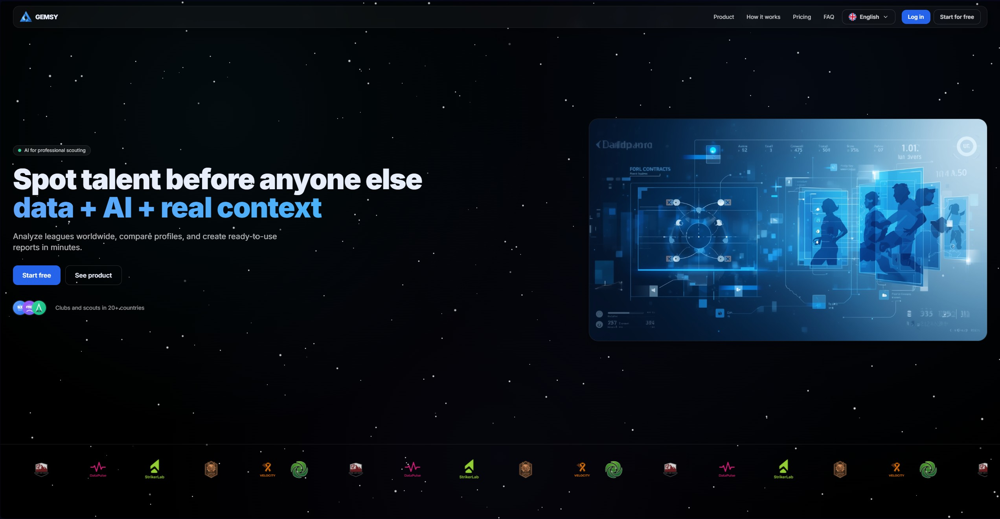

Ingeniería
Primero, ver el sistema completo.
Datos, usuarios, servicios y confianza. Antes de escribir código o buscar un fallo, hay que entender cómo encaja cada pieza.
Ingeniería y seguridad ofensiva
Murcia, España
Construyo software y estudio dónde falla. Del primer boceto a una prueba reproducible.
Backend, cloud, datos e IA aplicada.
Laboratorios, enumeración y análisis.
Hallazgos claros y reproducibles.
Una práctica, dos perspectivas
Ingeniería
Datos, usuarios, servicios y confianza. Antes de escribir código o buscar un fallo, hay que entender cómo encaja cada pieza.
Seguridad ofensiva
Enumerar, formular una hipótesis y probar con control. La intuición abre la puerta; la evidencia decide.
Resultado
Un sistema útil se puede mantener. Un hallazgo útil se puede explicar, repetir y corregir.
Trabajo seleccionado
Producto, infraestructura y seguridad. Cada proyecto resuelve un problema concreto.
01 / SAAS · IA
Plataforma de scouting que utiliza datos e IA para explorar, filtrar y comparar talento. Desarrollo de backend, arquitectura cloud y consultas semánticas.
Visitar proyecto
02 / SECURITY LAB
Entorno aislado para practicar enumeración, analizar configuraciones y documentar rutas de ataque y mitigaciones de forma controlada.
03 / WEB · DATA
Contenido y análisis de scouting con desarrollo técnico, optimización de rendimiento, SEO y automatización de procesos.
Visitar sitioPerfil
Actualidad
CTO
2025 — Presente
Fundador e ingeniería
2024 — Presente
Desarrollo web
2023 — 2025
Scout de datos
2022 — 2025
Coordinador de scouting
01
Diseño de backend, APIs REST, bases de datos, despliegue cloud e integración de IA en flujos útiles.
Python · PostgreSQL · GCP · REST
02
Enumeración de sistemas, análisis de superficie de ataque, explotación controlada y escalada de privilegios en laboratorio.
Burp · Nmap · AD · Linux
03
Máquinas y laboratorios de Hack The Box para entrenar metodología, análisis y documentación técnica.
Perfil de Hack The BoxFormación
Ciberseguridad en la empresa · 2025
Idiomas
Español nativo · Inglés avanzado · Francés intermedio · Catalán básico
Siguiente conversación
Abierto a proyectos y oportunidades en seguridad ofensiva, desarrollo e IA aplicada.
davidrodriguezscout@gmail.com